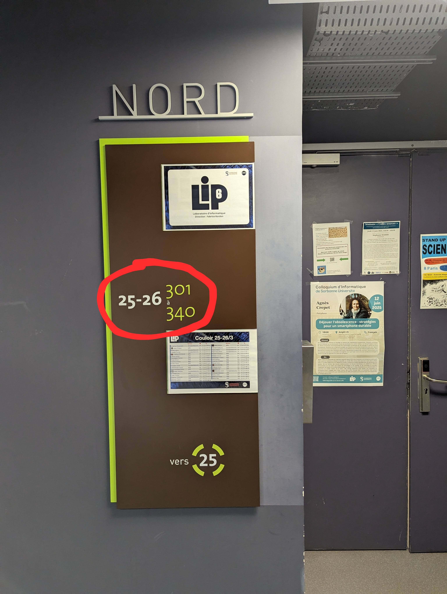
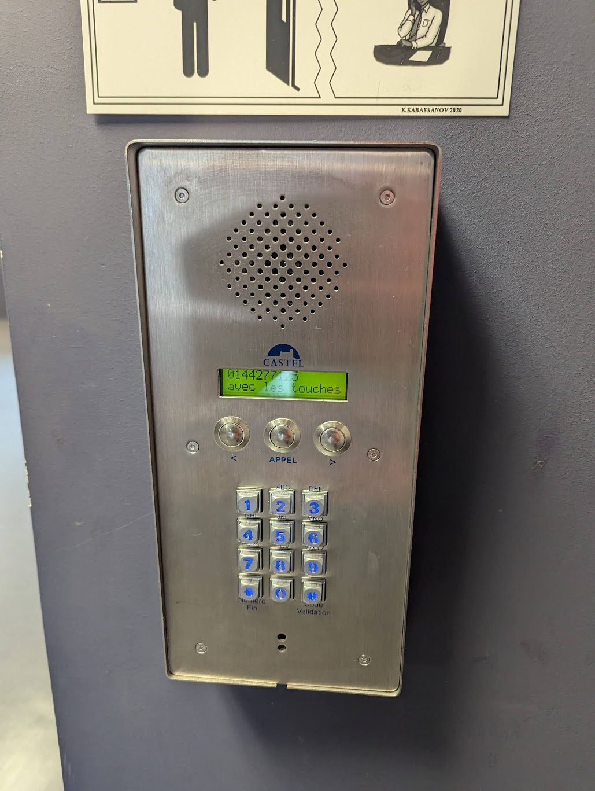

- The Science campus of Sorbonne Université is by metro station is Jussieu (Lines 7 and 10).
- After entering campus Pierre and Marie Curie by the main entrance (just across the metro exit Jussieu), turn left and find tower 26.
- Go up to the 3rd floor (stairs or elevator) Then you can climb up to the 3rd floor (either stairs or elevator) and find corridor 25/26 (see image below)

- If the door is closed, use the interphone and call the number ending by 77125 (you should find it by pressing the right button 6 times)

- I am in office 319